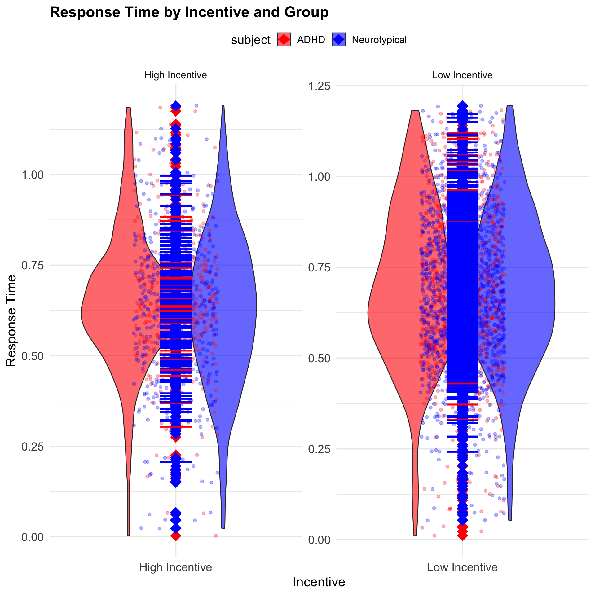

Cognitive Differences in Reward Processing and Working Memory between ADHD vs. Neurotypical Children
Vidushi Kataria1
1 Rutgers University–New Brunswick
`
Introduction
Understanding how reward sensitivity influences working memory performance in children with ADHD is crucial for designing targeted psychological and educational interventions. Working memory, the ability to hold and manipulate information over short periods, is fundamental to cognitive processes like learning and decision-making. By examining response timing and accuracy in an n-back task—a common working memory task—this study sheds light on how reward systems differ in ADHD versus neurotypical children.
The data used is publicly available OpenNeuro dataset Reward Sensitivity and Working Memory Performance in ADHD (ds002424/1.2.0).
Research Question: How do children with ADHD and neurotypical children differ in their reward processing and working memory performance, as measured by accuracy and response time on a 2-back task?
Hypothesis: Children with ADHD will show lower accuracy and longer response times compared to neurotypical children, reflecting differences in reward processing and working memory performance.
Plan:
Evaluate how reward sensitivity impacts working memory performance using accuracy and response timing metrics in 2-back tasks.
Analyze differences in performance between ADHD and neurotypical groups under high and low incentive conditions.
Methods
Participants
- ADHD: sub-01, sub-02, sub-04, sub-05, sub-17
- Neurotypical: sub-03, sub-18, sub-19, sub-20, sub-21
- Ages 8-12
Data Collection
Task: Participants completed n-back tasks under varying incentive conditions (monetary reward, feedback timing). There were 3 trial blocks conducted: baseline, 1-back, and 2-back. I chose to filter out responses only from the 2-back block as it will yield a higher variation in responses by being the most difficult task. Measures: Response times and accuracy were recorded. Incentive levels were manipulated through rewards (small or large) and feedback conditions (immediate or delayed).
Results
| subject | statistic | value |
|---|---|---|
| ADHD Group | mean_acc | 0.7251553 |
| ADHD Group | sd_acc | 0.4466094 |
| ADHD Group | mean_rt | 0.6773834 |
| ADHD Group | sd_rt | 0.2053857 |
| Neurotypical Group | mean_acc | 0.8222826 |
| Neurotypical Group | sd_acc | 0.3823786 |
| Neurotypical Group | mean_rt | 0.6706773 |
| Neurotypical Group | sd_rt | 0.2064560 |
The results show that children with ADHD have a lower mean accuracy (0.725) compared to neurotypical children (0.822), with a higher standard deviation in both accuracy and response time in the ADHD group. These findings support the hypothesis that children with ADHD exhibit lower accuracy and more variability in performance compared to neurotypical children.

This plot shows that ADHD children have significantly slower response times than Neurotypical children under High Incentive conditions, while there is no significant difference under Low Incentive conditions. These findings support my hypothesis that incentive levels impact response times, with ADHD children struggling more when motivation is higher.
This plot indicates that ADHD and Neurotypical children perform similarly under Low Incentive conditions, but under High Incentive conditions, ADHD children have statistically significant slower response times compared to Neurotypical children–as indicated by the confidence intervals not crossing zero. This suggests that incentive levels may influence the performance differences between the two groups, with ADHD children potentially struggling more under higher motivation or pressure conditions.
Conclusion
The analysis of response times by incentive condition revealed some interesting trends between ADHD and neurotypical children. The violin plot and boxplot with error bars show that, under both high and low incentive conditions, ADHD children exhibited a statistically significant delay in response times compared to neurotypical children.The overall trends suggest a potential difference, the response times of ADHD children were somewhat more spread out, especially under high incentive conditions.
The summary statistics table further supports these findings, with ADHD children showing slightly longer response times compared to neurotypical children under both incentive conditions. This suggests that incentive conditions might influence cognitive performance, particularly for ADHD children, although the variability in response times remains significant. These results partially confirm the hypothesis that incentives may impact ADHD children differently than neurotypical children, especially when the rewards are high, but further exploration with a larger sample size is needed to establish this link more robustly.